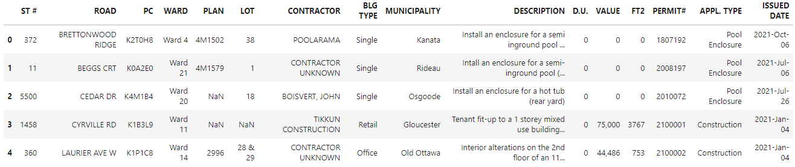

Getting Data
Contents
#Each Markdown file should contain at least four of the following five components
2 block math equations
2 code blocks
2 image files
2 admonitions
1 margin content
Getting Data#
Whether we use Python or Google Sheets, the first step of our project is to import data. For the purpose of this experiment, we will use a CSV version of a City of Ottawa dataset (ADD LINK TO SOURCE) listing the building, demolition, and pool enclosure permits delivered in 2021. The CSV file is available here.
Importing Data With pd.read#
To import the CSV into a Jupyter Notebook with Python, we need to run the code below in a code cell. We will name our dataset permits. This code will also display the first five rows thanks to .head().
import pandas as pd
permits = pd.read_csv('https://raw.githubusercontent.com/jsmarier/course-datasets/main/ottawa-building-permits-2021.csv')
permits.head()

```{note}
Since this page was created in the Markdown (.md) format, the code above is static. However, we will run the same code in our Understanding Data and Delivering Data Jupyter Notebooks.
As this point, we could already do some basic math operations, such as calculating the sum and mean of the FT2 column. This will give us an estimate of the square footage of the construction and demolition projects on the City of Ottawa’s territory in 2021. Here are the functions expressed in \(\LaTeX\) and Python. PUT REFERENCE TO MODULE 7 AND THE RESOURCES FROM ASSIGNMENT 7.
Sum
\(\LaTeX\)
Python
permits['FT2'].sum()
Average
\(\LaTeX\)
Python
permits['FT2'].mean()
Warning
Since I have worked with this dataset in the past, I know that there are some duplicates. These duplicates were created by city staff on purpose in order to individually list the various street addresses attached to the same permit number, for example in the case of row houses. Therefore, at this point, our sum and average functions will include these duplicates.
Importing Data With IMPORTDATA or the Import Option in Google Sheets#
Demonstrate, with Markdown and images, how importing a CSV dataset works with Python and Google Sheets.
Mention that I will be running the Python code in code cells in the Understanding Data and Delivering Data sections.
See Module 8.3 at 3:03 to include figures.
Warning
Google Sheets’s IMPORTDATA function does not work with larger files. In this case, you need to first download the CSV to your hard drive. Then, in Google Sheets, click on File > Import. When the “Import file” window appears, select “Upload.” Then, upload your CSV, making sure to select the appropriate value separator.